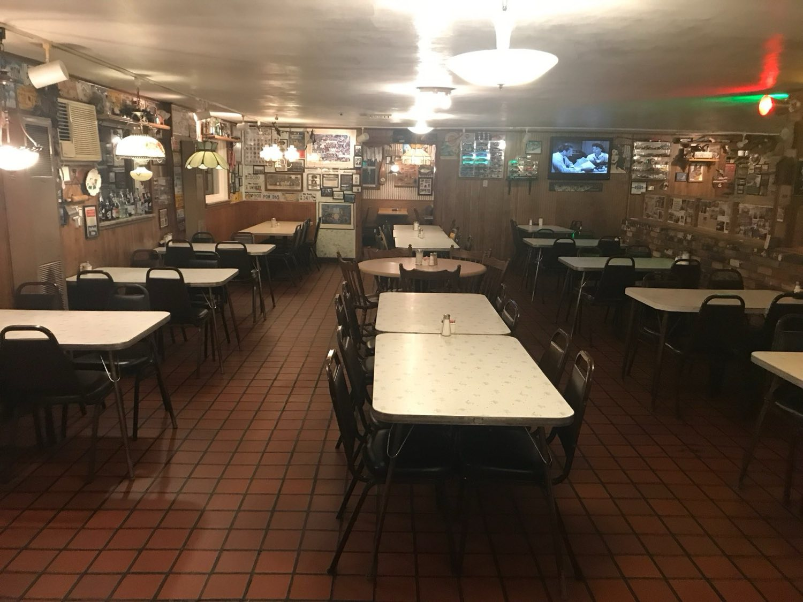

Our story
Four generations at Main Ave
The Diehl family's dream of opening their own restaurant became a reality on September 1st, 1960, with 8 employees.
After more than 20 years of working for his parents, Aaron and his wife Heather became the 3rd generation, along with their two children, Madison and Blaze, the 4th generation. Working side by side with the family, Diehl's now has over 30 employees, and a lot of the food is still prepared each day from scratch.
Since 19603rd & 4th generation30+ employees
Enjoy your dinner! — Aaron & Heather Diehl